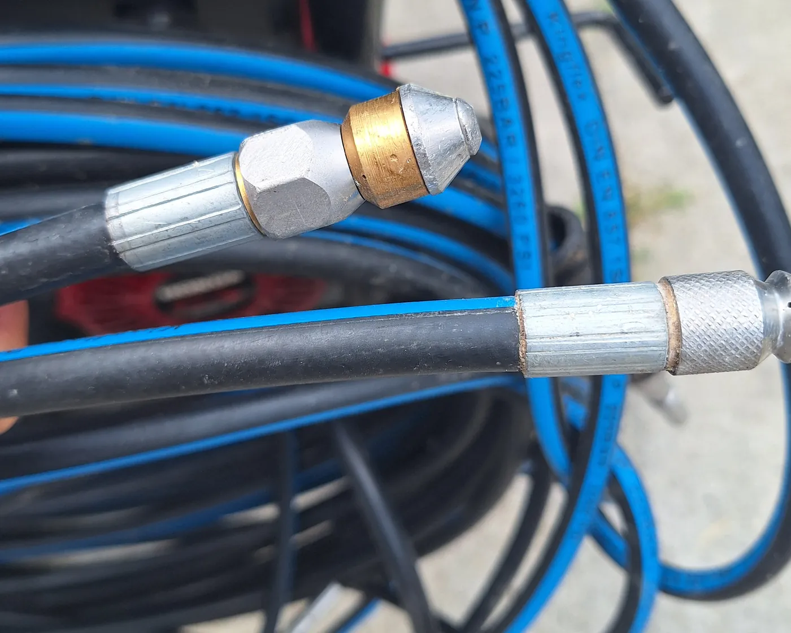

Duguláselhárítás Salgótarjánban és környékén Eldugult? Akár egy órán belül ott vagyok.
Bontás nélkül, saját gépekkel, 6 hónap garanciával. Éjjel és hétvégén is hívhat.
Hívjon most, 0-24 06 20 292 2730- 0-24hívható ügyelet, hétvégén és ünnepnap is
- 1 óraakár ennyin belül a helyszínen vagyok
- 0 Ftkiszállás Salgótarjánban és 20 km-es körzetében
- 6 hónapgarancia az elvégzett munkára
Amivel hívni szoktak
Lakásban és családi házban. A dugulást a helyszínen szüntetem meg, falbontás nélkül.
Árak és részletek-
Mosogató
Zsír, ételmaradék, lerakódás a konyhai lefolyóban. Lassan folyik le a víz, vagy egyáltalán nem.
-
Fürdőszoba
Kád, zuhanytálca, mosdó. Hajszál és szappan tömíti el, ettől jön fel a víz és a szag.
-
WC
Feljön a víz, nem húz le rendesen, vagy oda nem való tárgy került bele.
-
Csatorna
Az udvari aknától az utcai bekötésig. Nagynyomású vízzel tisztítom ki a csövet.
-
Kamerás vizsgálat
Ha visszatér a dugulás, kamerával megnézem, hol és mi okozza.

Saját gépekkel jövök
Öt éve dolgozom duguláselhárítóként. Saját gépparkkal dolgozom. Gyorsan kiérek, és alkalmazkodom az ügyfeleimhez.
Spirállal a lakáson belüli lefolyókat, magasnyomású vízzel a csatornát tisztítom. Ha kell, kamerával is megnézem a csövet.
A géppark és rólamSalgótarjánban és 70 km-es körzetében dolgozom
Salgótarjánban és 20 km-es körzetében ingyenes a kiszállás, 20 km felett csak az üzemanyag árát kérem. Hívjon, és megmondom, mikorra érek oda.
Salgótarjánon kívül például Bátonyterenyére, Pásztóra, Szécsénybe, Balassagyarmatra és a környező falvakba is kimegyek, Karancslapujtőtől Kazáron át Mátranovákig.
Cégeknek és intézményeknek is dolgozom, számlát adok.
06 20 292 2730